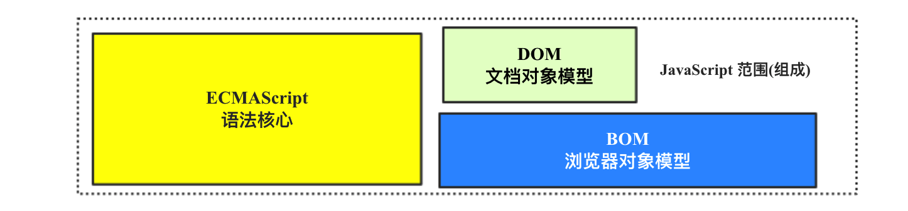
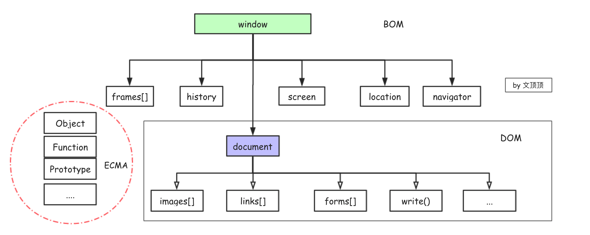

javaScript系列 [26]- BOM
**BOM简单介绍**
我们已经知道JavaScript的范围包括ECMAScript(语言核心) + DOM(文档对象模型) + BOM(浏览器对象模型)。
BOM 是 Browser Object Model（浏览器对象模型）的缩写，它提供了独立于内容 而与浏览器窗口进行交互的对象。由于BOM主要用于管理窗口与窗口之间的通讯，因此其核心对象是window，它表示流浏览器的一个实例。BOM由一系列相关的对象构成，并且每个对象都提供了很多方法与属性，window作为最顶层的对象，BOM中所有的对象都是通过它延伸出来的。
标准化 JavaScript语法的标准化组织是ECMA，DOM的标准化组织是W3C, 而BOM因为缺乏标准，BOM最初其实是Netscape浏览器标准的一部分，而这也正是各种浏览器不兼容的根源所在。此外需要指出的是，W3C为了把浏览器中JavaScript最基本的部分标准化，已经将BOM的主要方面纳入了HTML5的规范中。
**window和全局作用域**
在浏览器中，window对象拥有着双重的角色，它既是通过JavaScript访问浏览器窗口的接口，也是ECMAScript规定中的Global全局对象。因此，所有在全局作用域中声明的变量、函数都会自动成为window对象的属性和方法。
全局作用域
✧ 定义在全局环境下的变量和函数都会成为
window对象的成员(属性和方法)
✧ 编码的时候应该尽可能少的使用全局变量，以避免污染全局环境
✧ 没有用var声明的变量会成为全局变量，即window对象的属性
✧ 在编码时window前缀可以被省略，如window.console.log()通常写成console.log();
1 | /*01-全局作用域示例*/ |
因为全局作用域中声明的所有变量都会自动成为window的属性，而实际的开发中代码量可能是巨大的，且项目可能是由很N多人一起维护的，因此应该尽可能的减少全局变量的数量，以防止污染全局环境。
关于这个问题的解决方案可以有两种，一种是根据具体的业务和功能将部分代码封装到匿名函数(闭包)中保持独立性，一种是把很多变量和函数封装到特定的对象中处理。当然，更成熟的方案是使用 模块化 的方式来组织项目和代码结构，其实模块化的开发方式也是使用匿名函数封装的一种变形，在这里我们暂不作具体的展开。
注意 delete 用于删除对象的属性，需注意虽然使用delete关键字可以删除直接定义在 window 上面的属性，但却无法直接删除用 var 声明的全局变量(在严格模式下不能禁止使用 delete 来删除遍历，错误信息为 Uncaught SyntaxError: Delete of an unqualified identifier in strict mode. )。
1 | /*测试1：使用delete删除对象的属性*/ |
**window核心成员详解**
接下来，我将分门别类的讲解浏览器窗口的大小、滚动、导航、打开、弹窗、位置操作、历史记录以及事件处理等内容，所以这些功能都通过 window的核心成员来提供和实现。
window的 location 对象
location对象是window中最有用最重要的对象之一，它提供了与当前窗口中加载的文档有关的信息，而且它非常特殊，它既是window的属性也是document的属性。
1 | location 对象的主要属性 |
url的组成http://www.baidu.com:10086/api/reg.php?username=zs&password=123&age=18#123
**协议**：http
**域名**：baidu.com
**端口**：10086 (默认:80)
**路径**：/api/
**参数**：username=zs&password=123&age=18
**哈希**：#123
窗口的主要属性
跨浏览器确定窗口的大小可以使用window的innerWidth、innerHeight、outerWidth和outerHeight四个属性，它们分别对应的是页面视图容器的宽高和浏览器窗口本身的尺寸。需要注意的是，这几个属性存在兼容性问题，在IE8-中需要通过DOM来获取大小信息。
页面视图容器也称为浏览器的视口(
viewport),相比窗口本身来说它不包括工具栏和滚动条。
1 | /*01-获取页面可视区域的大小(宽 | 高)*/ |
窗口的打开和关闭
语法 window.open([ URL ],[ name ],[ features ],[ replace ])作用 open()方法用于打开一个新的浏览器窗口或查找一个已命名的窗口。
1 | /* 作用：打开新的窗口 |
系统弹框
alert( ) 弹出对话框(确定)
confirm( ) 弹出警告框，返回布尔值（确定&取消）
prompt( ) 弹出输入框，返回消息或 null
1 | //console.log(alert("确定")); /*提示框 该方法没有返回值*/ |
window的 history 对象
window对象中有一个history属性，它本身也是一个对象保存着网页的历史记录(从窗口打开时计算)。出于安全方面的考虑，开发人员无法得知用户浏览过的URL详情，但却可以利用history对象来实现前进和后退的功能。
history对象通过内部的length属性来记录浏览历史的数量，该数据包含了向前和向后的所有浏览记录，默认加载到窗口的第一个页面其history.length的值为0。
go( ) 跳转到任意的浏览历史记录，负数表示后退。
back( ) 后退一页
forward( ) 前进一页
1 | /*方法演示 下面代码中的window前缀可以省略*/ |
window的事件补充
onresize 事件会在窗口大小调整的时候被触发。onscroll 事件在页面滚动条滚动的时候会被触发。onload 事件会在页面加载完成(HTML+CSS+其它资源)后触发。